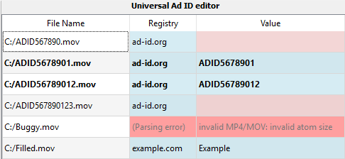

Universal Ad ID editor
After having drag and dropped (or from the "File" menu) some files, the Universal Ad ID view displays information (Universal Ad ID registry and Universal Ad ID value) about each file in a table.
Then it is possible to edit Universal Ad ID registry and Universal Ad ID value, and save this metadata.

Automatic filling
- In case a file is not supported, the line is in red, not modifiable, and a message is displayed
- If a file already has Universal Ad ID metadata, Registry and Value are displayed
- Else if a file name is conforming to standard Ad-ID identifier (11 or 12 alphanumeric characters), Registry is filled with "ad-id.org" and Value is filled with the file name
- Else Registry is pre-filled with "ad-id.org", and Value cell is in light red (empty Value is not authorized)
A cell in light red means that the content is not valid (so the file can not be saved).
A line in bold means that the metadata is valid and the file can be saved (click on the "Save" button or the "Save" item in the "File" menu)
Rules
- If Registry is empty, Value must be empty (meaning that the Universal Ad ID metadata is removed)
- If Registry is "ad-id.org", Value must conform to a standard Ad-ID format (11 or 12 alphanumeric characters)